He coughed up blood
It is 02:40. Work him up the way you would on the night take — examine, investigate, treat as you go. Every move costs ward time, and some results will not be back until the day team arrive.
Brought in by ambulance from Meadowcroft, the residential home where he has lived for two years, with a transfer sheet and nobody else. The night staff rang 999 when they turned him at half past one and he coughed blood into a tissue; the home’s probe read 86%. They say he has been generally unwell and more muddled than usual for a week or two, off his legs, and his legs are getting puffier. The GP started amoxicillin on Tuesday for a crackly chest. He has vascular dementia and cannot tell you anything about any of it. The ambulance put him on four litres.
- 1Work him up in stages — history, then examination, then investigations. He cannot give a history; the care home on the phone, the transfer sheet and the GP record can. You can step back to any completed stage; the case counts how often you do.
- 2Order investigations in rounds — the clock jumps by the slowest test. It is the middle of the night: some results land when the practice or the lab opens, and some only if you ring.
- 3Commit a working diagnosis, write the plan, and hand over to the day team. If the diagnosis was wrong, you will find out the way you always do — the nurse bleeps. Then prove you can manage it.
Tap to ask. He will answer every question, cheerfully, and none of it will help; the care home, on the phone, answer what the night staff honestly know. Each question costs about 30 seconds.

Five core systems are one tap. Everything else is typed — there is no menu, and choosing where to look is the examination.
Nothing is listed — type the examination you want, the way you’d say it on the ward.
The four bedside tests are on the trolley. Everything else — bloods, imaging, records, the echo — is ordered on ICE: type it the way you would at the terminal. Build a round, send it; the clock jumps by the slowest test. It is 3 am: the practice opens at eight, the immunology analyser runs at nine, and the on-call BMS only looks at urine if somebody rings.
You have a working diagnosis. Now write the plan — free text, the way you’d write it in the notes at 3 am. Nothing is listed; what you write is what gets done, and it is marked at the handover.
Commit a working diagnosis
It is the middle of the night and the day team will want a name. Name it the way you’d write it in the notes.
Your bleep goes.
You called it wrong.
Now manage it
He is alive and on the renal unit. This is what separates safe from dangerous — the decisions, with the evidence behind each.
- Haemoptysis + AKI + blood and protein on the dip = pulmonary-renal syndrome until proven otherwise. Small-vessel vasculitis (ANCA-associated, most often), anti-GBM disease, and a long way behind them lupus and cryoglobulinaemia. The trap is that each half has a comfortable explanation on its own — “pneumonia” for the chest, “dehydration” for the kidney. Do not diagnose pneumonia and AKI without connecting the two.
- The kidney told you it was not pre-renal, in four different ways. A blood pressure of 168 that never fell. Pitting oedema and a JVP of 3 cm in a man everyone called dry. Blood and protein on a dipstick of urine that looked perfectly normal. And 12 mL an hour into the catheter bag. Assess the volume status before a single bag goes up — in a man who is not dry, every bag went into alveoli already full of blood.
- Red-cell casts cannot come from a bladder. Dysmorphic red cells and casts are glomerular bleeding, full stop — not a stone, not a tumour, not a catheter, not an infection. The July dipstick went to urology on a two-week-wait because a dipstick cannot tell the difference; a microscope can. Non-visible haematuria with proteinuria or a falling eGFR is a nephrology referral, not a cystoscopy.
- In a bed-bound patient the dependent skin is the back. Palpable purpura was across his back, both flanks and both forearms; his shins — where everyone looks for a rash — were clean and swollen. On the forearms of an eighty-one-year-old on aspirin it passes for senile purpura until you press it. Turn the patient over. Lift the sheet. The diagnosis was written on him in a colour you could read from the door.
- “?infection ?oedema” on a two-line night report is not a diagnosis. Bilateral ground-glass with patchy consolidation has three causes — infection, haemorrhage, oedema — and a CT cannot choose between them. A haemoglobin falling with no visible bleed chooses for it: that is alveolar haemorrhage, and haemoptysis is absent in around a third of cases. Do the CTPA even with a creatinine of 212 (ACR–NKF 2020: the contrast risk has been overstated and a management-changing scan is not withheld), and read the whole report, in the morning, from the radiologist who looked properly.
- NICE NG158’s interim anticoagulation has a bleeding-risk clause. Wells 10 and a delayed CTPA does mean “offer interim therapeutic anticoagulation” — after assessing bleeding risk. Active haemoptysis with a haemoglobin from 128 to 91 is a bleeding risk, and a pulmonary-renal syndrome on the differential makes the anticoagulant an accelerant. There is no compromise dose. Get the scan sooner, not the heparin.
- Tonight’s treatment is not induction. Cultures, then IV methylprednisolone (250–500 mg by most UK protocols, up to 1 g in life-threatening disease) on clinical grounds, without waiting for an antibody. Stop every nephrotoxin. Treat the potassium. Ring renal. Rituximab or cyclophosphamide — NICE TA308; EULAR 2022 and KDIGO 2024 rate them equivalent for new organ-threatening disease — is a specialist decision after the hepatitis screen and the biopsy conversation, and at 81 with an eGFR of 24 the cyclophosphamide dose is reduced twice over. That is not a 4 am prescription.
- Anti-GBM is the result you phone about. A positive makes plasma exchange standard, today, because untreated anti-GBM kidneys do not come back. In ANCA vasculitis plasma exchange is selective — PEXIVAS (NEJM 2020) found no reduction in death or end-stage kidney disease, and a reduced-dose steroid regimen non-inferior with fewer serious infections. EULAR 2022: may be considered with a creatinine over 300 from active GN; KDIGO 2024 adds dialysis-dependence and anti-GBM overlap; the two differ on hypoxaemic alveolar haemorrhage. Selected circumstances, decided by renal.
- The filter is coming whatever you write tonight. Indications for renal replacement are consequences, not numbers: refractory hyperkalaemia, severe acidosis, fluid overload with hypoxia, uraemic complications. He had three of the four by 08:40. The steroids are for the lungs today and for the nephrons in three months; the potassium at breakfast is the renal team’s, and they will not be surprised if you wrote the sentence “may need a filter” in the notes.
- The history-less patient still has a history — and this one was thin on purpose. The home knew he was unwell, more muddled, off his legs and getting puffy, and that is all they knew. The GP record at eight had the rest: a creatinine of 104 called dehydration, a July dipstick sent to urology, naproxen for joints that were never osteoarthritis, amoxicillin for a chest that was bleeding. When the history gives you nothing, the examination and the urine have to give you everything. Nobody said the word rash, and nobody had to.
- When the nurse bleeps to say he looks a lot sicker, the diagnosis is a hypothesis again. A working diagnosis at 04:00 is a bet. The most dangerous sentence on a night take is “he’s already been reviewed”. Go back. Look again. Lift the sheet.